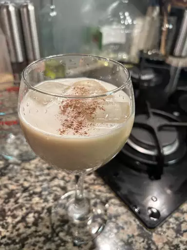
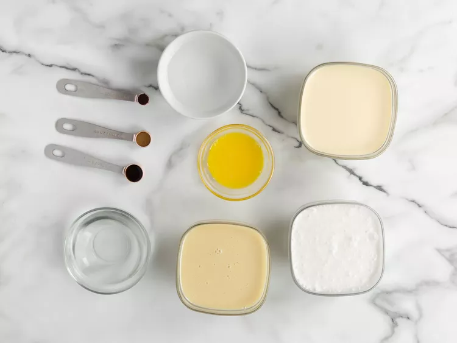
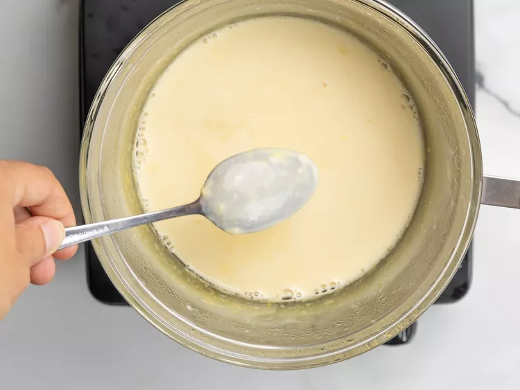
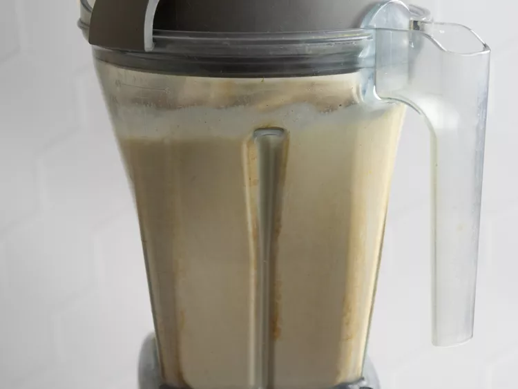

The conquito recipe

Description
Coquito, a traditional Puerto Rican beverage, is a rich and creamy concoction that embodies the warmth
and festive spirit of the Christmas season. Its name, "coquito," translates to "little coconut" in
Spanish, aptly capturing its essence as a coconut-based delight. This tropical treasure is a
cherished part of Puerto Rican culture, gracing tables during family gatherings and parrandas
(traditional Christmas caroling festivities).
Ingredients
- 1 (12 fluid ounce) can evaporated milk
- 2 large egg yolks, beaten
- 1 (14 ounce) can cream of coconut
- 1 (14 ounce) can sweetened condensed milk
- ½ cup white rum
- ½ cup water
- 1 teaspoon vanilla extract
- ½ teaspoon ground cinnamon
- ¼ teaspoon ground cloves
Steps
-
Step
Gather all ingredients.

-
Step
Combine evaporated milk and egg yolks in the top of a double boiler over simmering water.
Cook over the simmering water, stirring constantly, until mixture is thick enough to coat
the back of a spoon, and reaches a temperature of 160 degrees F (71 degrees C).

-
Step
Transfer mixture to a blender. Add cream of coconut, sweetened condensed
milk, rum, water, vanilla, cinnamon, and cloves; blend until combined, about 30 seconds.

-
Step
Pour into sterilized glass bottles and store in the refrigerator; serve cold or over ice, if desired.